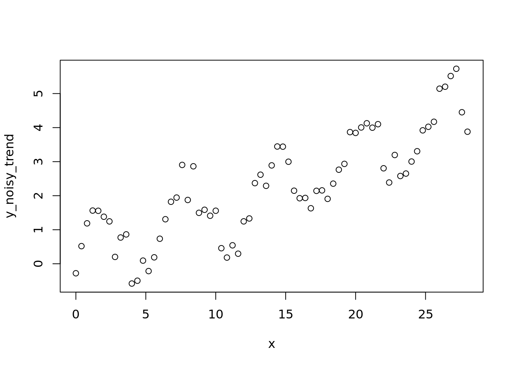
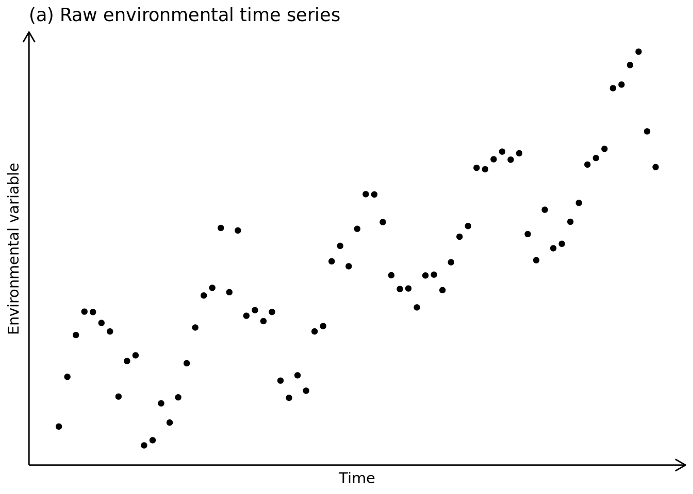
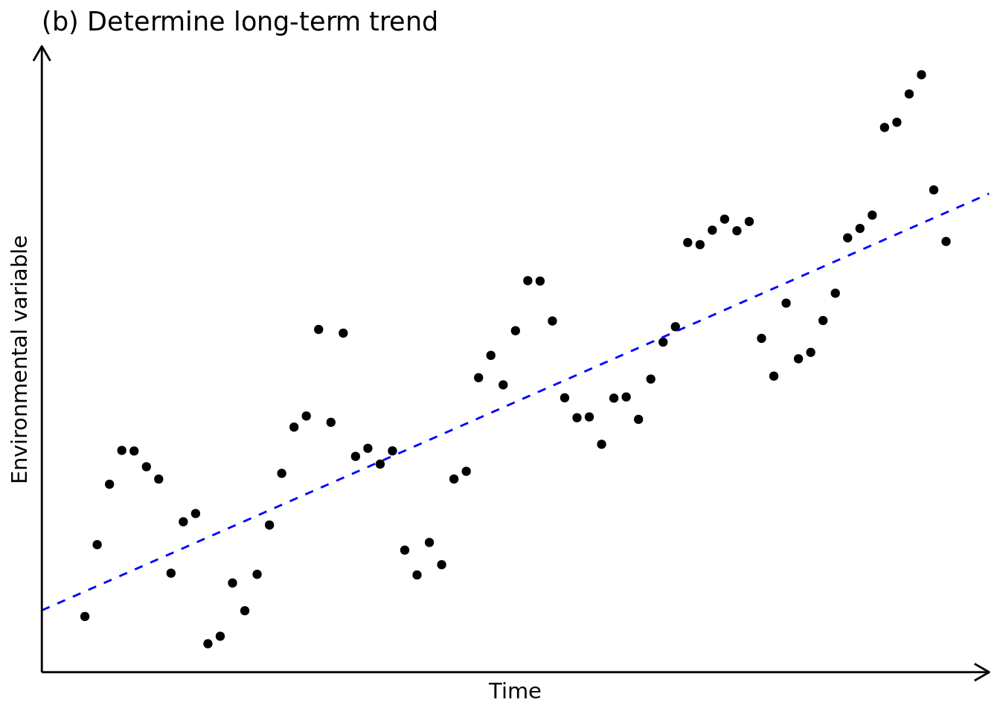
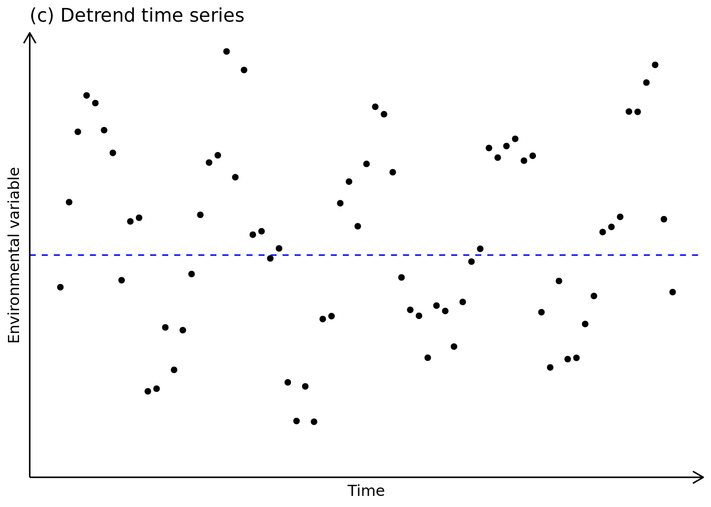
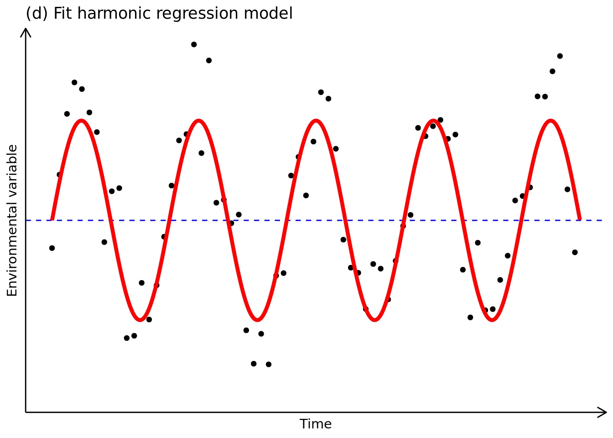
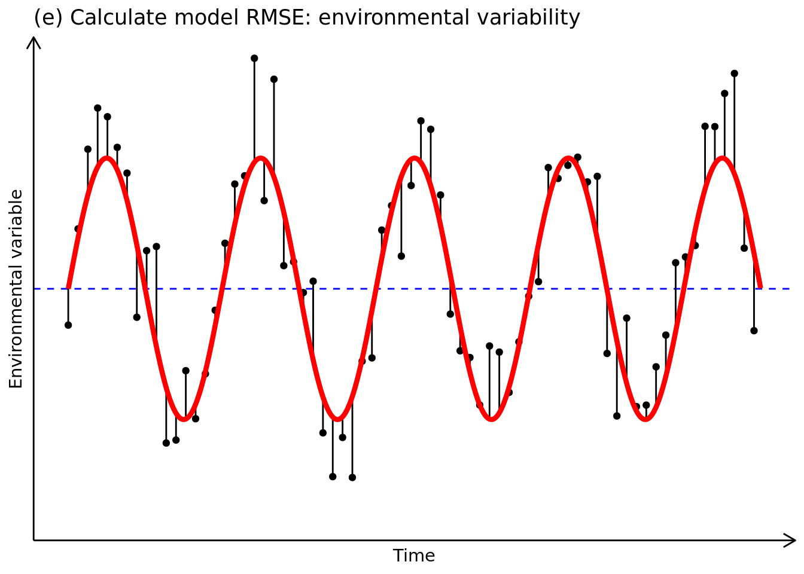
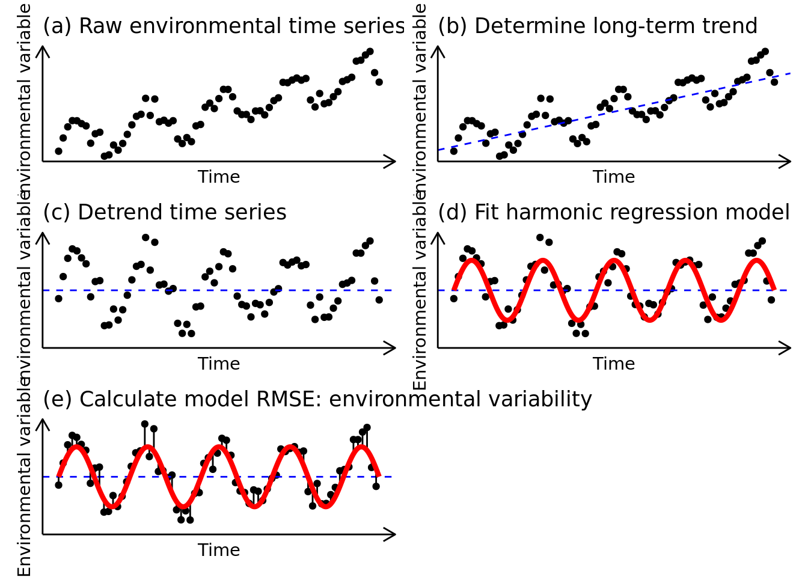

10 Trends-Variability method
set.seed(41)
x <- seq(from = 0, to = 9 * pi, by = 0.4)
y <- sin(x)
y_noisy <- sin(x) + rnorm(length(x), sd = 0.35)
y_noisy_trend <- y_noisy + 0.15*x
data <- data.frame(x = x, y = y, y_noisy = y_noisy, y_noisy_trend = y_noisy_trend)
x_smooth <- seq(from = 0, to = 9 * pi, by = 0.01)
y_smooth <- sin(x_smooth)
data_smooth <- data.frame(x = x_smooth, y = y_smooth)
plot(x, y_noisy_trend)
ggplot(data) +
geom_point(aes(x = x, y = y_noisy_trend)) +
theme_classic() +
labs(y = "Environmental variable", x = "Time", title = "(a) Raw environmental time series") +
theme(axis.ticks = element_blank(),
axis.text.x = element_blank(),
axis.text.y = element_blank(),
axis.line.y = element_line(arrow = grid::arrow(length = unit(0.3, "cm"), ends = "last")),
axis.line.x = element_line(arrow = grid::arrow(length = unit(0.3, "cm"), ends = "last"))) -> p1
p1
p1 +
geom_abline(slope = 0.15, intercept = 0, color = "blue", linetype = 2) +
theme_classic() +
labs(y = "Environmental variable", x = "Time", title = "(b) Determine long-term trend") +
theme(axis.ticks = element_blank(),
axis.text.x = element_blank(),
axis.text.y = element_blank(),
axis.line.y = element_line(arrow = grid::arrow(length = unit(0.3, "cm"), ends = "last")),
axis.line.x = element_line(arrow = grid::arrow(length = unit(0.3, "cm"), ends = "last"))) -> p2
p2
ggplot(data) +
geom_point(aes(x = x, y = y_noisy)) +
geom_hline(yintercept = 0, color = "blue", linetype = 2) +
theme_classic() +
coord_cartesian(ylim = c(-1.75, 1.75)) +
labs(y = "Environmental variable", x = "Time", title = "(c) Detrend time series") +
theme(axis.ticks = element_blank(),
axis.text.x = element_blank(),
axis.text.y = element_blank(),
axis.line.y = element_line(arrow = grid::arrow(length = unit(0.3, "cm"), ends = "last")),
axis.line.x = element_line(arrow = grid::arrow(length = unit(0.3, "cm"), ends = "last"))) -> p3
p3
ggplot(data) +
geom_point(aes(x = x, y = y_noisy)) +
geom_hline(yintercept = 0, color = "blue", linetype = 2) +
geom_line(aes(x = x, y = y), data = data_smooth, color = "red", size = 1.5) +
theme_classic() +
coord_cartesian(ylim = c(-1.75, 1.75)) +
labs(y = "Environmental variable", x = "Time", title = "(d) Fit harmonic regression model") +
theme(axis.ticks = element_blank(),
axis.text.x = element_blank(),
axis.text.y = element_blank(),
axis.line.y = element_line(arrow = grid::arrow(length = unit(0.3, "cm"), ends = "last")),
axis.line.x = element_line(arrow = grid::arrow(length = unit(0.3, "cm"), ends = "last"))) -> p4
p4
ggplot(data) +
geom_point(aes(x = x, y = y_noisy)) +
geom_hline(yintercept = 0, color = "blue", linetype = 2) +
geom_segment(aes(x = x, xend = x, y = y, yend = y_noisy), size = 0.5) +
geom_line(aes(x = x, y = y), data = data_smooth, color = "red", size = 1.5) +
theme_classic() +
coord_cartesian(ylim = c(-1.75, 1.75)) +
labs(y = "Environmental variable", x = "Time", title = "(e) Calculate model RMSE: environmental variability") +
theme(axis.ticks = element_blank(),
axis.text.x = element_blank(),
axis.text.y = element_blank(),
axis.line.y = element_line(arrow = grid::arrow(length = unit(0.3, "cm"), ends = "last")),
axis.line.x = element_line(arrow = grid::arrow(length = unit(0.3, "cm"), ends = "last"))) -> p5
p5
p1 + p2 + p3 + p4 + p5 +
plot_layout(ncol = 2)
ggsave(filename = "data/processed/plots/trends-variability.pdf", device = "pdf", width = 10, height = 8, units = "in")